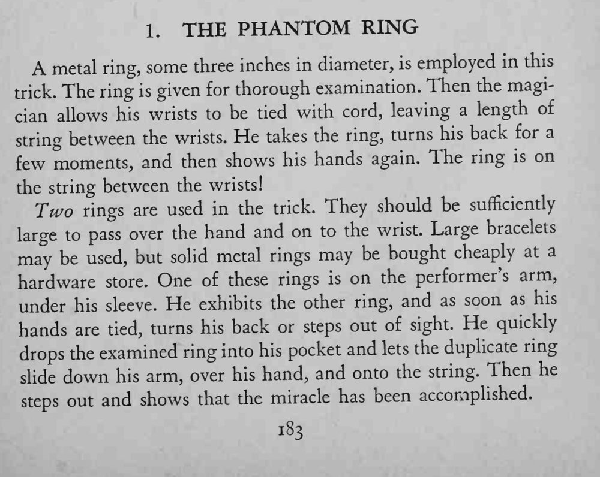

双手被绳子绑住，魔术师只是背过身去，刚才检查过的那只铁环竟然已经穿在两手之间的绳子上。
两只环的大小要能套过手掌，转身的时间越短越好，滑环动作要练熟。

A metal ring, some three inches in diameter, is employed in this The ring given for thorough examination. Then the magitrick. is cian allows his wrists to be tied with cord, leaving a length of string between the wrists. He takes the ring, turns his back for a few moments, and then shows his hands again. The ring is on the string between the wrists! Two rings are used in the trick. They should be sufficiently large to pass over the hand and on to the wrist. Large bracelets may be used, but solid metal rings may be bought cheaply at a hardware store. One of these rings is on the performer's arm, under his sleeve. He exhibits the other ring, and as soon as his hands are tied, turns his back or steps out of sight. He quickly drops the examined ring into his pocket and lets the duplicate ring slide down his arm, over his hand, and onto the string. Then he steps out and shows that the miracle has been accomplished.